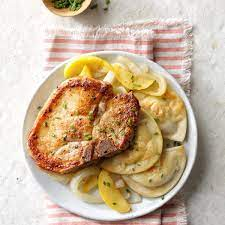

Porkchops 'N' Pierogies

Description
Delicious comfort food that's cheaper than eating out!Takes about 30 minutes and serves two.
Ingredients
- 8 frozen pierogies
- 2 bone-in porck loin chops
- salt and pepper
- 4 tbsp of butter, divided
- 1 medium sweet onion, sliced, and seperated into rings
- 1 medium apple cut into 1/4-inch slices
- 1/4 cup of sugar
- 1/4 cup cider vinegar
Directions
- Cook pierogies according to package
- Meanwhile., sprinkle porkchops with salt and pepper. In a large skillet, cook chops in 2 tbsps butter over medium heat until juices run clear; remove and keep warm
- In the same skillet, aute onion in remaining butter. Add apple and saute until almost tender.
- Stir in sugar, vinegar, and salt and pepper. Bring to a boil.
- Reduce heat and let simmer, uncovered, for 5 minutes. Drain pierogies. Add porkchops and pierogies into skillet and stir to coat